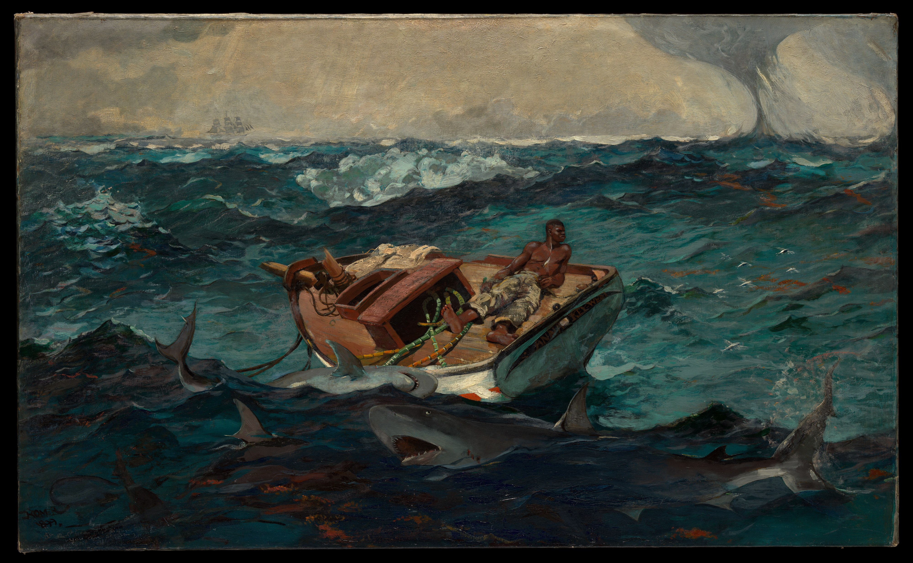

The Gulf Stream
One boat, one sea, a ring of sharks: danger is not the climax; it is the weather of the image.

Begin with the line that drags the eye outward
A damaged boat rises through the swell; a Black man lies among mast and rigging; sharks circle below; a waterspout turns in the distance. Almost everything moves. The horizon alone stays bluntly calm, trapping the figure on a cold horizontal line.
Composition: survival folded into an ellipse
Boat, body, mast and sharks form a broken ellipse. The eye catches the white shirt, follows the red hull downward, then returns through the sharks to the centre. The waterspout creates a second vertical axis—a distant countdown. Homer refuses heroic scale: human scale is swallowed by the sea’s scale.
Colour: a warning inside a cold field
The water is built from blue-green and blue-grey: sea-foam white #D9DED7, deep teal #28535A, shadow teal #173B45. Rust red #A9442B and ochre orange #C6753A mark boat and figure. Cool hues establish breadth; warm hues carry emotion. White highlights fracture the surface, while red behaves like an alarm inside the analogous teal field.
#28535AShadow teal
#173B45Rust red
#A9442BSea-foam white
#D9DED7
Light and technique: the sea is not a backdrop
At the crests, oil paint breaks into short, agitated marks; foam resembles paper cut by wind. Edges around figure and boat remain partly unresolved, allowing water to invade the objects. Wave, wind, shark and spout become one system of pressure.
The artist and the history inside the frame
Homer first became known for illustration and Civil War field drawings, then worked for years in Maine and the Caribbean. The Met reads the painting as a culmination of his interest in human conflict with nature, while also linking Caribbean commodity economy, empire and transatlantic slavery. The Black man is not a generic castaway; he is a subject placed inside a charged ocean history.
Why it moves
There is no promise of rescue. The sail is gone, the water rises, the sharks keep their orbit. Yet the figure holds an unreadable posture—composure, exhaustion, or waiting. We are not observing a finished disaster; the current seems to carry us with him.
A practical palette: let the focal colour burn cold
Use 60% #28535A and 25% #173B45 for environmental weight; 10% #A9442B and 5% #C6753A for the decisive action; reserve #D9DED7 for broken highlights. In design or dress: blue-grey field + one rust-red piece + a small ivory note.
Facts and image: [Met object record](https://www.metmuseum.org/art/collection/search/11122) · [Open Access original](https://images.metmuseum.org/CRDImages/ad/original/DP-20821-001.jpg). The museum marks the work Public Domain; confirm terms on the source page and under local law. Copyright remains with the original artist and relevant image-rights holders. Appreciation by Kecheng Art.